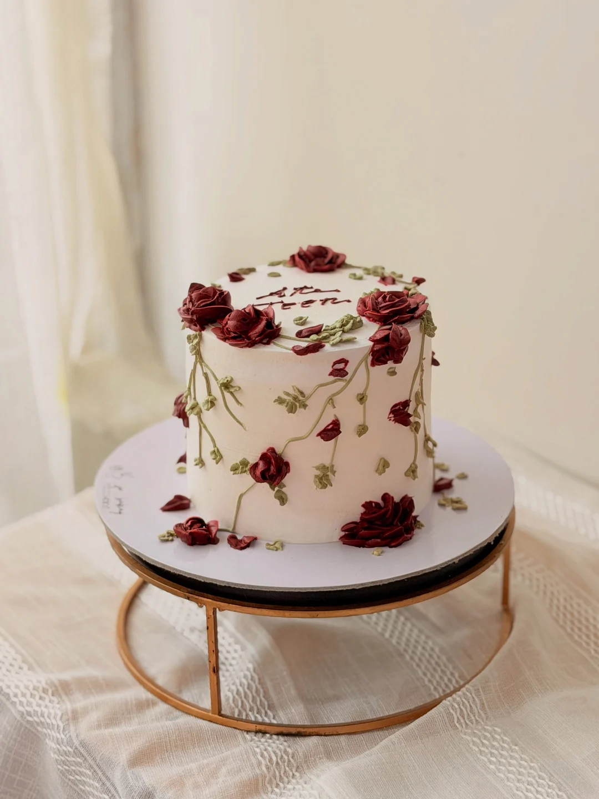
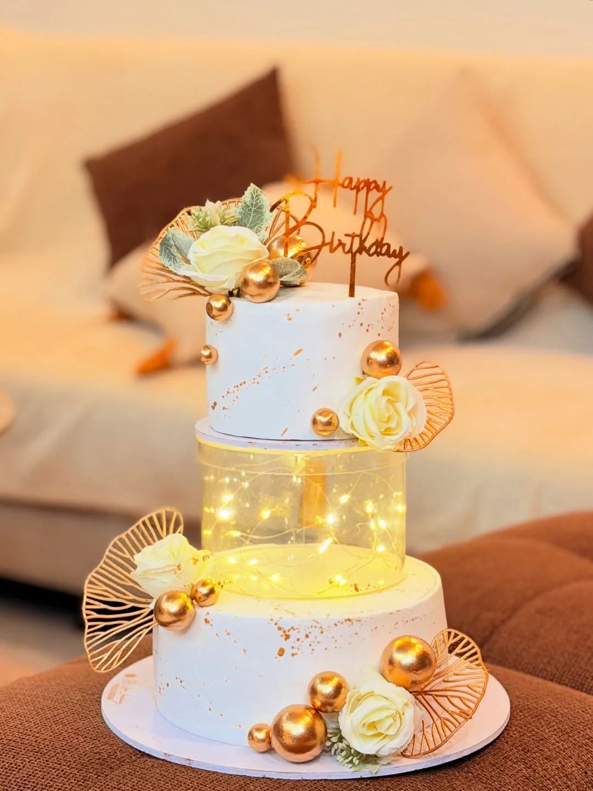
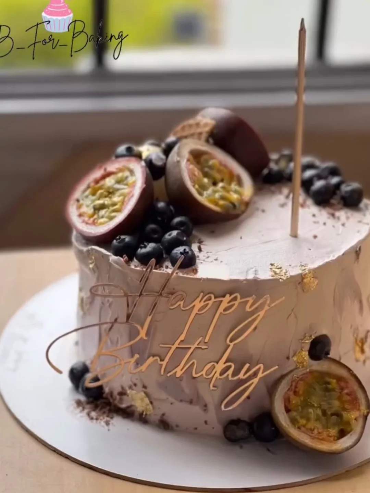
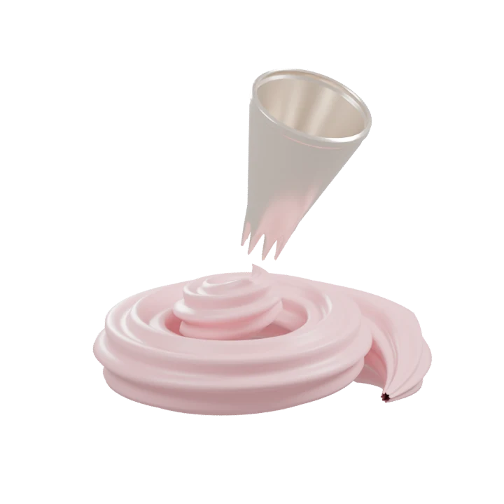
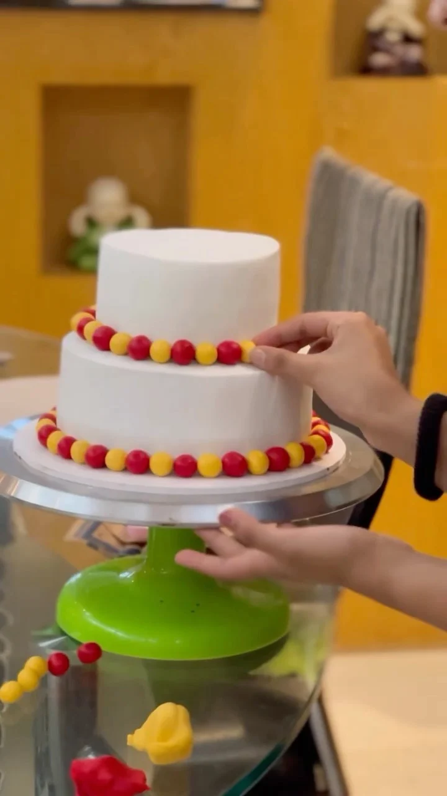
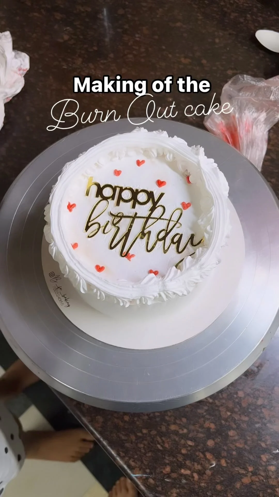
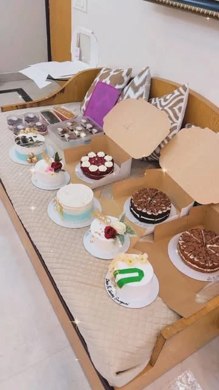
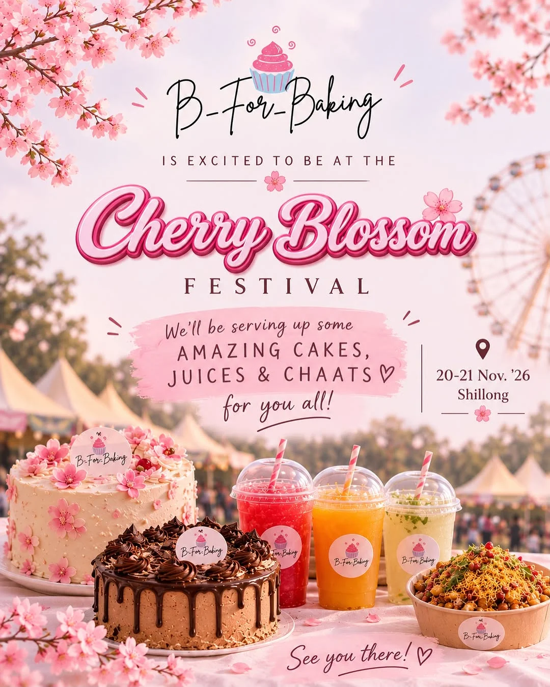

Inside the bakery
The finishing
touch.
A rose piped in deep red. A ring of dark berries. A little gold between two tiers. In our Shillong cake book, each celebration has a detail of its own.
Opening the cake book
Shillong boutique bakery
Eggless customised cakes and curated hampers for the people you celebrate.
Explore the cake book



Inside the bakery
A rose piped in deep red. A ring of dark berries. A little gold between two tiers. In our Shillong cake book, each celebration has a detail of its own.
Buttercream roses
Deep red roses climb the sides of an ivory cake. Small green leaves sit between the folds of buttercream.
Customised cakes
Look between the roses. A birthday message sits in the centre, small enough to feel like a note to the person cutting the first slice.
Browse the cake bookCelebration tiers
A clear tier holds tiny lights between two ivory cakes. Cream flowers and gold fans carry the eye from the base to the birthday topper.
Curated hampers
A clear balloon floats above a hamper trimmed in blue. Before the first ribbon comes loose, the celebration has already begun.
Ask about a hamperThe bakery journal

Red and yellow piping meets a clean white edge.

Gold script sits above the pale icing, framed by the piped edge.

Little cakes sit side by side in their open boxes.

Cakes, drinks and cherry blossoms on the bakery’s festival poster.
From @b_for_baking
Look through the cakes, hampers and little moments from the bakery.
Enquiries & orders
Tell us your date, your occasion, and the design you have in mind. Paid delivery is available in Shillong.
Enquire on Instagram